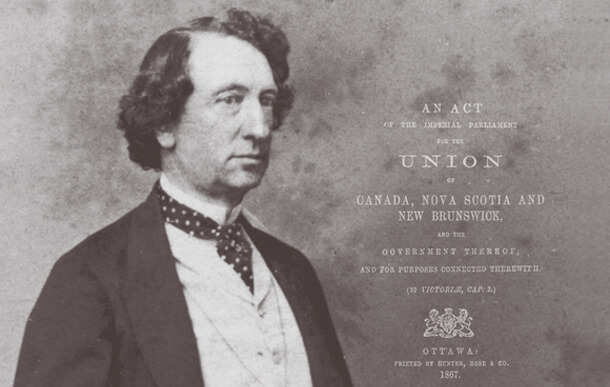

Early Life
Sir John Alexander Macdonald was born on January 11th, 1815 in Glasgow, Scotland. He is the son of Hugh and Helen Shaw and has three siblings. At the young age of 5, he and his family immigrated to Kingston in the province of Upper Canada. He attended the Kingston Collegiate and Vocational Institute where he was taught the art of persuasion, Latin, Greek, arithmetic, and geography. By the age of 17, Macdonald showed promise as an exceptional lawyer.
At the age of 19, he opened his own office in Kingston. Two years later, he was invited into the Legal Society of Upper Canada.
Entering Politics
Mr. Macdonald’s legislative campaign commenced as an Alderman, an elected constituent of the municipal council. In 1844, he was elected to the Assembly of the Province of Canada representing Kingston. Through a series of accelerated promotions, Macdonald became the general of W.H. Draper’s Cabinet in 1847 and grew to the position of Attorney General by 1856.
In 1867, the British Parliament passed the Act on British North America. On July 1, 1867, the Dominion of Canada was officially created. To remember the day that Canada became a self-governing Dominion, July 1 was observed as 'Dominion Day' until 1982. It is also officially referred to as Canada Day. This was also the day that Sr. John A. Macdonald took on the role of Canada's Prime Minister.
Impacts On Canadian History
Sir John Alexander Macdonald successfully built a national government with a healthy and growing economy. Additionally, he finished the Canadian Pacific Railway (CPR) boosting tourism and immigration to Canada. The railway grew and expanded to accommodate steamships, hotels, airlines, mining, oil and gas exploration, delivery and telecommunications companies.
According to Britannica, the dominion quickly expanded to include the provinces of Manitoba (1870), British Columbia (1871), and Prince Edward Island (1873) under Macdonald’s leadership.
His contribution to the event of the Canadian nation way exceeded that of any of his colleagues, however, he wasn't naturally an associate in the process of creating these approaches. Confederation, the CPR, and therefore the tariff weren't his ideas, however, he was sensible and tenacious in achieving his goals once convinced of their necessity. As an officer, he quickly developed astuteness and originality. He was an extremely devoted politician, partially as a result of the genuine belief it had been essential to take care of bound political courses. He was notably involved with maintaining the British people’s affiliation to Canada — as well as the tradition of parliamentary ascendancy — against the threat of economic and political influences, like the belief of constitutional ascendancy.
Scandals
Construction of Railways
John A Macdonald is arguably known to be the “Father of Confederation or “The best Prime Minister in Canadian History.” All these nicknames can be true but we do not know the dark side of this famous prime minister and all his mistakes toward the children and immigrants of this country. To own the territory of West Ontario, Macdonald and his party realized that constructing a railway/railroad would be easier to connect with other communities in a new country. The Canadian Pacific Railroad (CPR) is a transcontinental line connecting the Atlantic to the Pacific. This was a key component to Macdonald’s “National Policy” (the national policy is a Canadian economic program that started with John A Macdonald). Even though the government at that time had many oppositions, they still pursued their “dreams” to finish the railway, even when they knew it was going to take at least 15 years or more.
In British Columbia, there was difficulty in maintaining a sufficient workforce. For this reason, it led to the most controversial decision they made during the construction of the Railroad: the importation of 15 000 Chinese Immigrants to help build this enormous task. Even when the government and these new “Canadians” brought in the Chinese, they made them work for little food and little payment, some historians think around 600 Chinese people died during construction (that is ⅖ of the whole population).
The Pacific Scandal
The Pacific Scandal of 1873, in which the government was accused of taking bribes regarding the Pacific railway contract, forced Macdonald to resign, but he returned as prime minister five years later and served until his death.
The Canadian Pacific Railway was an extremely difficult project that took 25 million dollars and an area span of 25 million acres to construct. The number of job availability attracted Chinese people to work for the railway. Even though the Chinese helped to construct Macdonald’s dream, he was discriminating against them. British Columbians were racist towards Asian cultural backgrounds, and wouldn’t treat them equally due to white supremacy. White supremacy was when the white people thought that they had more rights than any other culture. They thought that they were the superior culture, and cultures including several Asian backgrounds were not allowed to enjoy rights such as watching the movies or receive the same pay in a job as a white person.
Residential Schools
In a place like Canada, where diversity is not only identified but celebrated, Macdonald invented residential schools. “Residential schools were government-sponsored religious schools that were established to assimilate Indigenous children into Euro-Canadian culture.” - (J.R. Miller. September 2nd, 2020. Residential Schools in Canada. January 21st, 2021)
Sir John A. Macdonald had founded the idea of residential schools, an awful experience for many indigenous children. School is meant to be a safe space for all students to feel safe and welcome, having a school named after a political leader who proposed policies that were harmful to a specific group of people could induce the student to feel out of place and unsafe at school. Residential schools are responsible for the deaths of nearly 6000 indigenous children forced into conversion.
During Residential Schools, students went through severe physical and sexual abuse. Some teachers there were sexual predators and denied all allegations posed by parents. This proves to show that residential schools at that time were the most dangerous places for indigenous people.
Conclusion
According to - (Graham Evan MacDonell. 2020. When life's work is done – the passing of Sir John A. Macdonald. January 21st, 2021) - on February 26th, 1891, a family physician had diagnosed Macdonald with “commencing bronchitis, loss of voice, congested soft palate and pharynx, pain on inspiration over the left lung, and a very weak and irregular pulse. There was no doubt of a congested chest and threatened pneumonia." So it was reported in Historic Headlines. Macdonald suffered heart failure and had a second stroke on May 29th. And on June 5th, 1891 - the day before his untimely passing - a third stroke ultimately caused his death
We all know the story of John A. Macdonald, a man of hard work and determination. Unfortunately, he has committed some crimes causing the defacement of the $10 bill and ongoing vandalizing of his monuments. The term “will be remembered, but not celebrated” will apply to Macdonald’s life in all degrees.